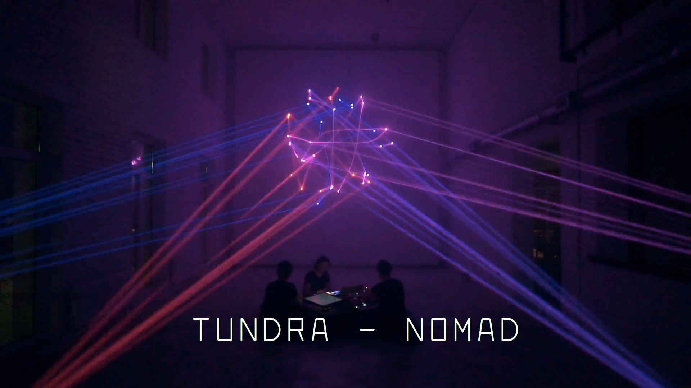
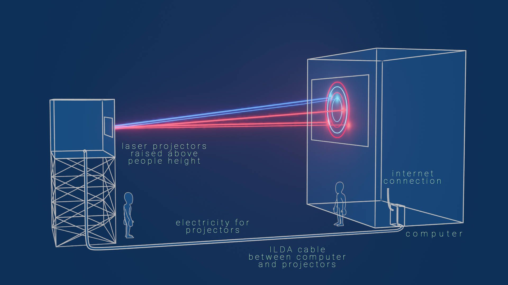

Concept
For the Nobel Week Lights 2021, re|thread proposes a real time generative light work with software activity at the very core. Computer science is not a category for which Nobel Prizes are awarded. Meanwhile, computers and software are the heart of the recent scientific breakthroughs, which have been rewarded by Nobel prizes.
At this early stage we propose two options for a software art installation at the Nobel Week Lights 2021. These options, entitled re|1 and re|2, share the same concept and are adapted to different locations. Common for both options is the desire to convey the sublimity and texture of core high frequency software operations using laser projection technology through fine grained live generated visuals.
The term "laser projector" can have several meanings. What we mean for re|1 and re|2 is the type of fast scanning laser projector used for works such as DEEP WEB by Christopher Bauder, Lumière and Fragile Territories by Robert Henke or this live performance by TUNDRA. Images on the right are stills from these previous works using laser projection, which illustrate the kind of light we plan to use.

re|1: Interactive generative light projection installation
The first option allows for an interactive component to the work. It means that the audience must be able to come somehow close to the projection to read instructions for how to access the installation.
The installation will have two modes. On one side, the installation will display the visitor's interaction. Secondly, the installation displays the software activity generated by the visitors actions. These two modes will ideally require two separate, possibly overlapping, projections.
Interaction will made available through a web app in which visitors can choose among a range Nobel laureates. A short text that describes the discovery that earned them their prize will be shown. After selecting a laureate, their face will be projected on a wall. The visitor can then move their 'avatar' around the wall, through the app.
Software aspect
In the web app that we will develop, visitors can recreate a virtual meeting between past and present Nobel laureates. By picking their favourite Nobel prize winner and moving their photo around on a projection, the visitors will create an illusory mingle with some of the top scientists of all time.
This, in one sense, rather simple interaction requires a lot of software to work. The software activity that we want to display through the light projections is the very software that runs the installation. To power the interactive element we will have a web server handle communication between the visitors' smartphones and the visual interface controlling the projections. This web server, while controlling this communication, will produce tons of software activity: millions of events every second. We will use the most relevant subset of this acitivty to feed a generative art algorithm, producing the laser movements that create the final light art projection.
Relation to Nobel
The installation will celebrate past and present Nobel laureates through the interactive part of the installations. Photos of the prize winners and a short and accessible description of their work will be integrated into the experience through a web interface.
Location
This option for the re|thread installation is well-suited for a projection on a wall, without windows and which the audience can approach easily. The following locations will work well:
Kulturhuset, concrete wall on the backThe back side of Kulturhuset has this wonderful industrial looking concrete wall:

The flat wall and the lack of windows make it relatively easy to use this wall for laser projection. The location is very central and accessible. There are ample opportunities for placing projectors.
Medborgarhuset, Medborgasplatsen Photo: Arild Vågen
Photo: Arild Vågen
Medborgarhuset has 3 front facing wall sections, each divided into two with windows in the middle. Either all three or the middle wall could be used. The windows would likely have to be covered to stop stray laser beams from reaching inside.
re|2: Real time generative light installation powered by science experiments
In the second option there is no interaction. Instead, the software activity that powers the generative art algorithm will be taken directly from computers running real, often very demanding, science experiments.
Similar to the option above, the software activity will be fed into a generative algorithm that produces an abstract and fine-grained textural light installation through the use of several light projectors. Unlike it, however, this one will not have an interactive component. Meanwhile, this option will be performed at a larger scale, on iconic, full building facades, which must be observed from a distance to grasp the whole complexity of software and to appreciate the light installation in its entirety.
Software aspect
Software is necessary for modern scientific discoveries. The most recent breakthroughs in physics are evidenced through software simulations, and all modern medicine and chemistry bleeding edge research is assessed through advanced data analytics. re|2 reveals the extraordinary complexity of the computational complexity that supports the scientific research of the latest Nobel prize laureates. For example, this installation unveils the rich interconnections between communities of mathematicians, software engineers and biologists that have build the software infrastructure for DNA data analysis, as well as the deep levels of code that allow Emmanuelle Charpentier to explore the mysteries of genomics.
Relation to Nobel
In a wide range of scientific fields, computers have become indispensable tools for carrying the research forward. They may be carrying out simulations of natural systems, analyze data from massive space telescopes, or help develop new treatments for serious diseases such as COVID-19. This is true, also of the research done for present and future Nobel Prize laureates. By offering a window into this software realm, we unveil parts of the very foundation of tomorrow's great scientific discoveries.
Location
White buildings facing Hötorget
This location is central, and it has huge white walls that would provide a good surface for laser projections. Mounting projectors should be easy if access to buildings facing the wall is possible.
Katarinahuset, Slussen
Highly visible from far away. Mounting laser projectors may be possible on top of the pedestrian bridges.
Bridge over Kungsgatan
Both a tunnel and a bridge, this prominent city feature embodies the metaphor of connection that is so pervasive for software at all levels.
Tech
The location is the most important determining factor for exactly what equipment will be needed. The following diagram provides an overview of the setup we imagine:
On site
Laser projector(s) of sufficient brightness will need to be rented, as well as necessary housing for such a projector e.g. a container. 3 projectors will be required for ideal results, although we can make it work with fewer for some locations. An example of a suitable laser projector is the KVANT LD 33 Atom RGBY.
Laser DAC to control the laser projector from a computer, such as the Ether Dream 2 or the Helios Laser DAC.
Computer generating the visuals and encoding them in the correct format for the projectors. Ideally, this computer will be placed inside a building with wired connectivity to the laser projectors.
Stable and fast internet to connect the installation to the web interface that the visitors can access. This will ideally be a wired connection to the computer inside a building (see above). Other solutions, such as a 4G mobile broadband connection, can be made to work, but will likely hurt the responsiveness of the interactive element.
Power for both the projectors and the computer controlling them.
Off site
A web server to connect the installation to its data source as well as provide the interactive experience in re|1.
Safety and security
Laser beams pointing directly towards people can in most cases be a safety hazard. To avoid this, precautions must be taken, both in the design of the piece and to make the laser projectors physically inaccessible to a curious audience. The projectors can be raised above human reachable height in a raised container, or by mounting them on/in a facing building if available.
In the first option there is an interactive aspect to the work. This means that the projection has to be remotely controlled which opens it up to potential cybersecurity issues. We will therefore have to build fail safes into the code such that a malicious attacker cannot gain complete control of the projection or disable any safety features.